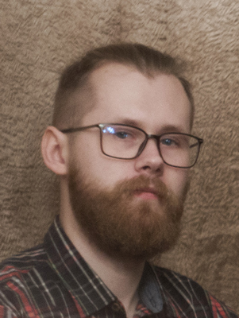

Качкин Евгений Михайлович
Дата рождения:
Место проживания:
Семейное положение:
Опыт работы:
Образование:
15 октября 1994г
ЛО г.Всеволожск
Помолвлен
3 года
Высшее техническое
Контакты
Email:
Skype:
Телефон:
liret13@gmail.com
hochgeboren
+7(981)-185-54-74
О себе
Личные качества
Основные знания HTML5&CSS3, JS, Git, при необходимости в работе освою ajax, jQuery, less, sass. Есть желание обучаться, развиваться профессионально, стремиться к карьерному росту;
хочу повышать уровень знаний в данной области, обучаться новым технологиям и уметь применять их на практике;
коммуникабелен, общителен и разносторонен.
Ожидания от работы
Главное для успеха на любой работе для меня это коллектив! Хороший коллектив это задаток хорошо выполненной работы.
Конечно же возможность профессионального роста, повышения квалификации, условия труда.
Еще немного обо мне
Решил попробовать себя в этой сфере, имеются основные необходимые навыки,
но нужна помощь в дальнейшем прогрессе и совершенствовании. Опыт в этой сфере небольшой и на уровне обучения и практики.
Отлично выполняю четко поставленные задачи, умею поддержать беседу и хорошо слушаю.
Люблю отдохнуть за чашечкой хорошего кофе, с книгой или же с новыми интересными людьми.
Заинтересован в новых технологиях разной сферы и игровой индустрией, а так же люблю путешествия.
Хобби - рисование и моделирование (постройка в масштабе моделей, в моем случае кораблей).